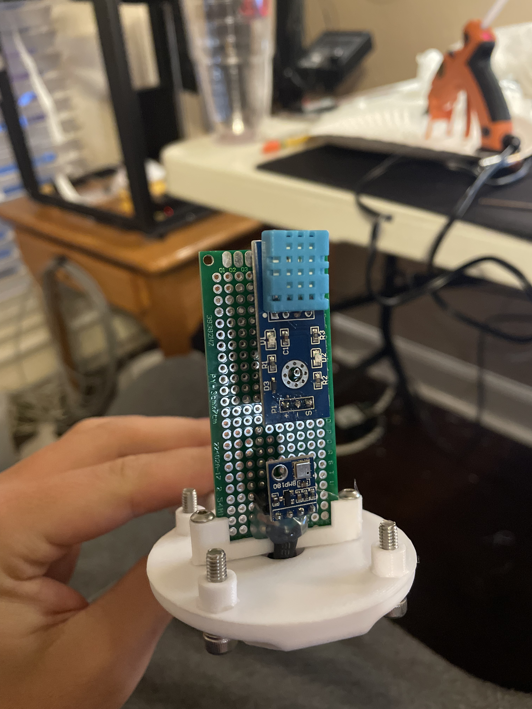
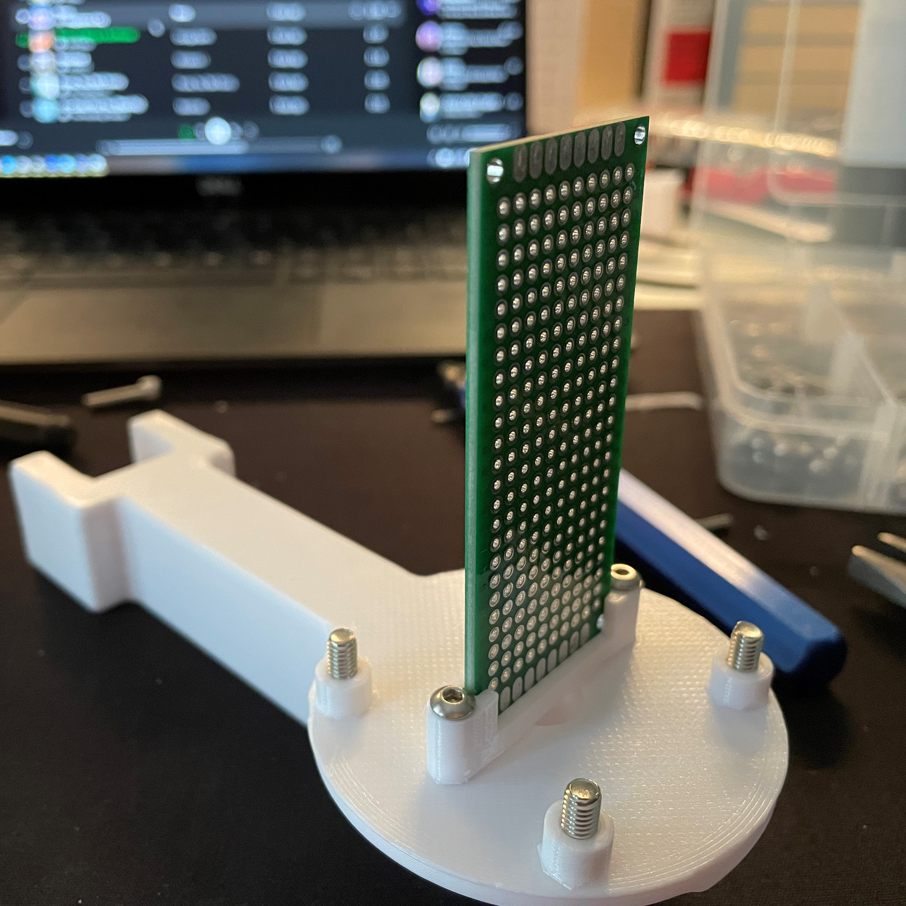
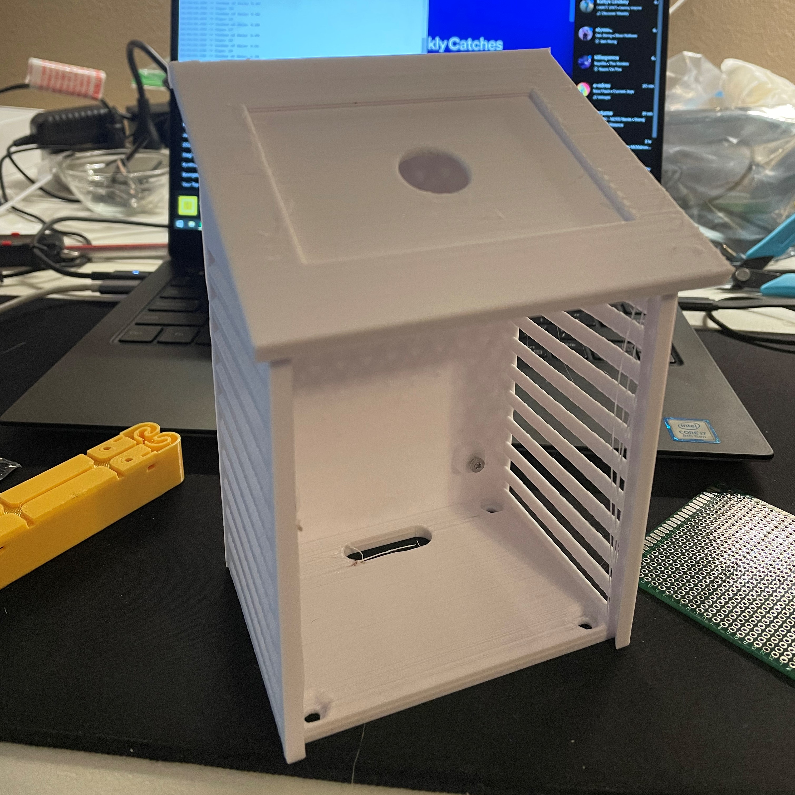
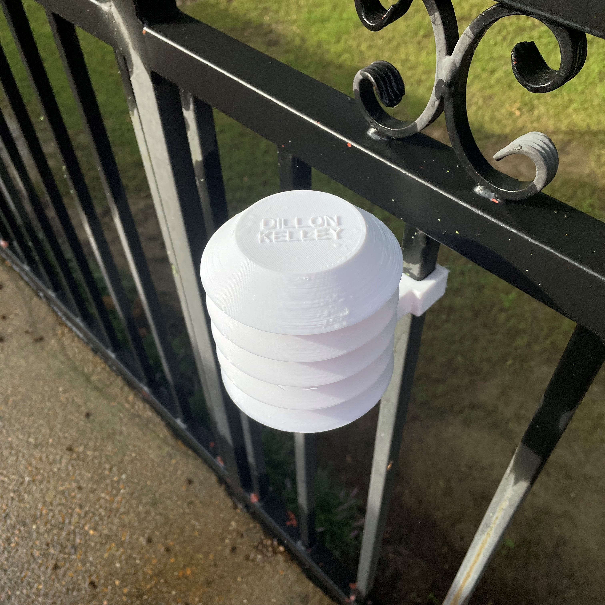
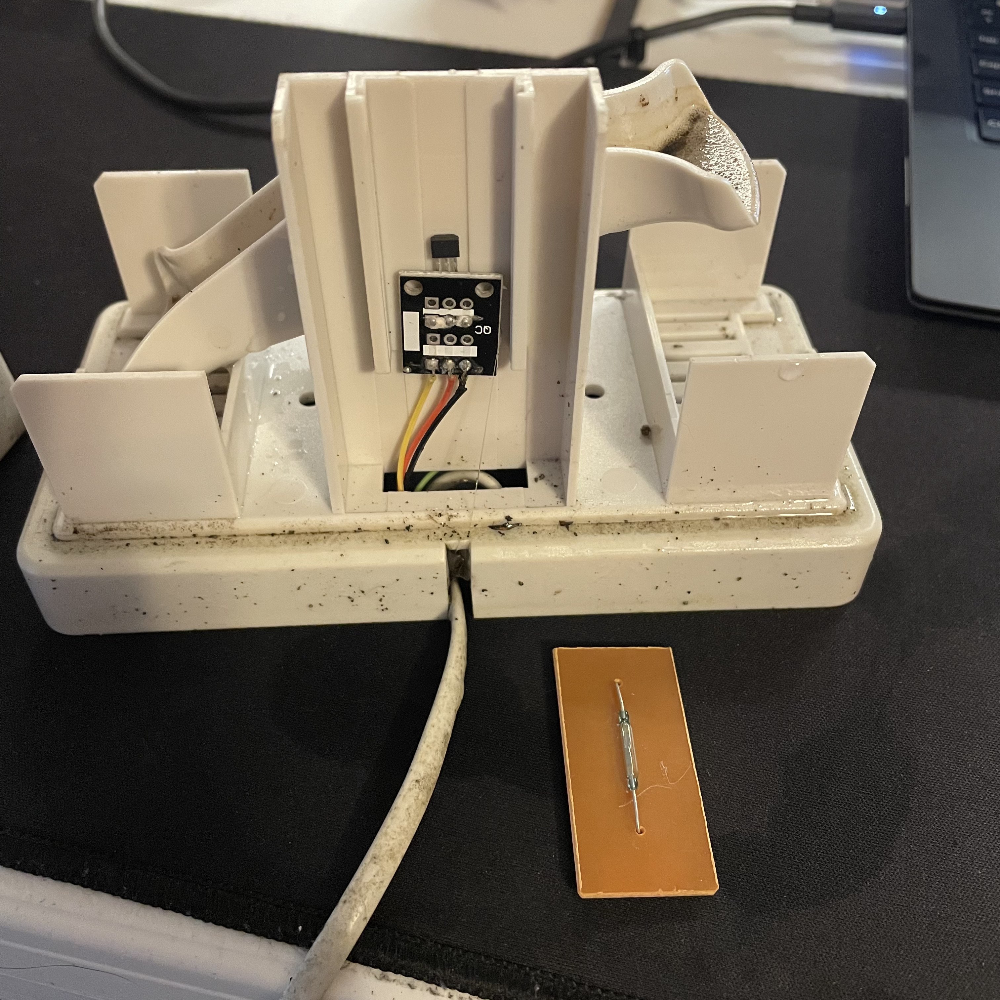

Weather Station


This weather station uses two ESP-32 microcontrollers to wirelessly communicte using the ESP-NOW communication protocol. Weather data from a DHT-11 humidity sensor and BMP180 temperature and pressure sensor collect data inside a radiation shield that I 3D modeled. This data is taken at a preprogrammed intervals from these sensors to the ESP-32 to be sent to the reciever inside for display on a small screen meant for a desk. The design also implements a rain sensor and tipping bucket rain gauge as a seperate module that I had lying around as spare parts from an old weather station. In the future, it would be nice to add more functionality with an anemometer to collect windspeed data. Another idea I would like to implement in the future is data logging on an MQTT server using a raspberry pi server that talks to all my electronics projects. This would be useful to track the climate over time at the residence, while comparing it to measurements from the local municipality. All the materials are purchased, but since the semester has started, finding free time to work on hobbies will be hard to come by.
Radiation Shield Assembly

Both iterations of the radiation shield were modeled using Creo Parametric 6.0. I originally designed a square box with louvers surrounding each side and a basic slanted roof. Although this design was simple to design and featured integrated circuit board mounting and an inlay for a solar panel, the design was not very element proof. After two days of weather testing, it was clear the design let too much rain inside the housing which could damage the more sensitive components of the weather station. After the failure of this design, I researched commercial weather station radiation shields and came across the "stevenson" radiation shield, which is a round cylindical structure with louvers wrapping all around. I also took note that they were all white as to not absorb excess solar radiation that could throw off measurements.

I tried to find a 3D printable design online, but every design posted had its own set of problems that seemed to make them unattractive to print. Most of these preexisting models used large metal shafts or required intricate post print assembly. So, I just made my own fully 3D printable radiation shield, except for a few M3 and M4 nuts and bolts. It is designed to accomodate a 25 millimeter wide circuit board, with integrated cable passthrough inside the support shaft.
Tipping Rain Guage

This is an off the shelf tipping bucket rain gauge that is about 20 years old. For this project, I have modified it for ease of data collection using an ESP-32 microcontroller. The original reed switch on the bottom right of the image has been replaced with a linear hall effect sensor in order to reduce electronic noise when capturing the physical tipping of the rain gauge bucket. The main issue regarding the original reed switch centered around the tiny moving contacts that would touch, completing the circuit, when a close enough magnetic field interacted with it. Since the microcontroller can process data extremely fast, whenever the magnet passed by the switch would bounce on and off in fractions of a second, causing each tip of the rain gauge bucket to correspond to tens of tips read by the microcontroller. After various attempts at debouncing the system, I decided to replace the reed switch entirely with a solid-state linear hall effect sensor. This creates a concise and accurate reading each time the bucket tips, allowing for easy parsing of rainfall data. After many months of testing in the rain, the gauge is a little dirty but has continued to work flawlessly.